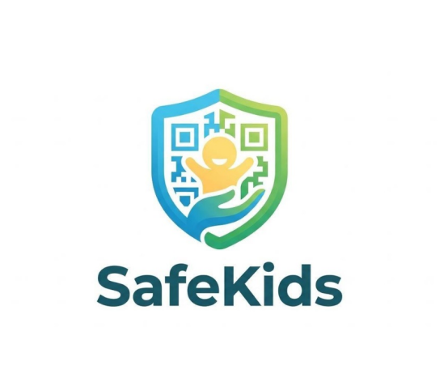

01
El tutor configura
Registra el perfil infantil y vincula el dispositivo con un código autorizado.
Aplicación del padreSafeKids busca ayudar a las familias a reaccionar ante una separación accidental con ubicación compartida, alertas y una forma sencilla de pedir ayuda.

SEGURIDAD QUE ACOMPAÑAEl portal reúne información y descargas. Las aplicaciones se conectarán a servicios seguros en la nube cuando estén implementadas.
Registra el perfil infantil y vincula el dispositivo con un código autorizado.
Aplicación del padreCon los permisos adecuados, envía coordenadas GPS y el estado de conexión.
Aplicación del niñoEl sistema compara las últimas ubicaciones y puede notificar eventos configurados.
Servicios en la nubeEstas son las funciones que construiremos y probaremos antes de publicar los APK definitivos.
Ver el punto reportado, la hora de actualización y la precisión estimada por el dispositivo.
Enviar una alerta al tutor con la última ubicación disponible, si hay conexión.
Detectar cuando las ubicaciones reportadas superen un radio configurable.
Limitar el acceso a perfiles vinculados y proteger la información familiar.
Consultar alertas y tiempos de reporte según las opciones de privacidad definidas.
Mostrar cuándo la ubicación está desactualizada o no se puede obtener.
Los enlaces se activarán cuando los APK se hayan compilado, revisado y probado en dispositivos reales.
Mapa, perfiles infantiles, estado de ubicación y recepción de alertas.
Vinculación con el tutor, ubicación con permiso y botón SOS.
Descargas oficiales: esta página todavía no distribuye APK. Publicaremos aquí únicamente archivos generados y probados por el proyecto.
Transparencia sobre las capacidades y los límites del sistema.
No. Este portal es una versión informativa interactiva. Las aplicaciones Android y su conexión a la nube todavía deben desarrollarse y probarse.
No se puede garantizar exactitud absoluta. El GPS informa coordenadas y una precisión estimada, que varía por señal, dispositivo, edificios y permisos.
La versión final necesitará servicios de ubicación y notificaciones configurados para Android. Deben probarse en teléfonos reales y pueden depender de batería, conexión y ajustes del sistema.
La propuesta es usar Firebase en la nube con reglas de acceso. Se configurará antes de habilitar cuentas y datos reales; esta página no recopila ni guarda ubicaciones.
El siguiente hito es terminar las aplicaciones Android, configurar la base de datos y validar las alertas con dos teléfonos.
Antes del lanzamiento se implementarán autenticación, reglas de acceso, consentimiento del tutor, protección de claves y políticas de conservación de datos. No introduzcas información real de niños en esta página de demostración.